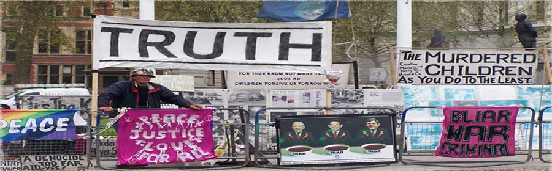

The Story of Brian and Parliament
Square
Last Updated: 22nd February 2009 |


Brian and his display - (C)Barbara Tucker |
Brian Haw is a long-serving peace campaigner who has been campaigning
in Parliament Square, London, opposite the Houses of Parliament. His campaign
began on 2nd June 2001 after the Gulf
War to highlight the effect of sanctions
imposed on Iraq by the United
Nations. Initially Brian campaigned with one placard that read, "Stop
Killing Kids. Make Peace not War. Let Iraq Infants Live". Over time
Brian set up a small area to sleep and and created new banners and placards.
His supporters and various passers-by from around the world also donated
their placards, poems, works of art and even teddy bears. Eventually they
created a huge pro-peace display that extended forty metres along Parliament
Square.
In 2005, the UK government passed a law (the Serious
Organised Crime and Police Act 2005) which included legislation specifically
aimed at removing Brian and his display from Parliament Square. On 23rd
May 2006, seventy eight police removed almost all of Brian's display and
applied strict conditions on his demonstration.
The removal of the display prompted two of Brian's supporters to give
up their jobs and daily lives to become permanent residents of Parliament
Square. A variety of supporters have also spent long periods of time living
in the square to help maintain the peace campaign. Many others have donated
their spare time attending the campaign whenever they can.
The Parliament Square peace campaign is now known around the world. In
2006 Brian's original display was re-created by Mark
Wallinger and displayed in Tate
Britain for several months, before touring Europe. Brian himself has
appeared in many television interviews and also won the 2007 Channel
4 award for most inspiring political figure.
To this day, Brian and his supporters are still living on the pavement
in Parliament Square. The campaign has extended beyond its original cause
and now includes subjects such as the second invasion of Iraq,
the invasion of Afghanistan,
depleted
uranium and the erosion of civil liberties within the UK via SOCPA
and various anti-terror legislation.
|